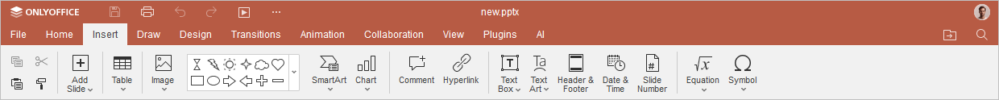
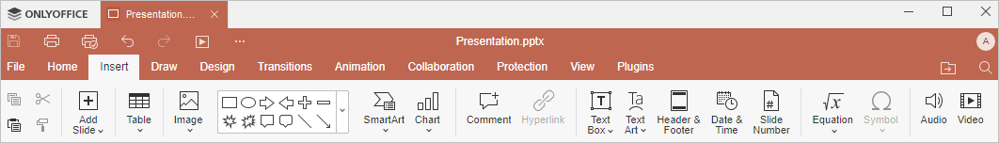

Kartica Umetanje
Kartica Umetanje u Presentation Editor-u omogućava dodavanje vizuelnih objekata i komentara u prezentaciju.
Odgovarajući prozor Online Presentation Editor-a:

Odgovarajući prozor Desktop Presentation Editor-a:

Korišćenjem ove kartice možete:
- umetnuti tabele,
- umetnuti tekstualne okvire i Text Art objekte, slike, oblike, SmartArt, grafikone,
- umetnuti komentare i hiperveze,
- umetnuti podnožja, datum i vreme, brojeve slajdova.
- umetnuti jednačine, simbole,
- umetnuti audio i video zapise sačuvane na hard disku računara (dostupno samo u desktop verziji, nije dostupno za Mac OS).
Napomena: da biste mogli da reprodukujete video, potrebno je da instalirate kodeke, na primer K-Lite.